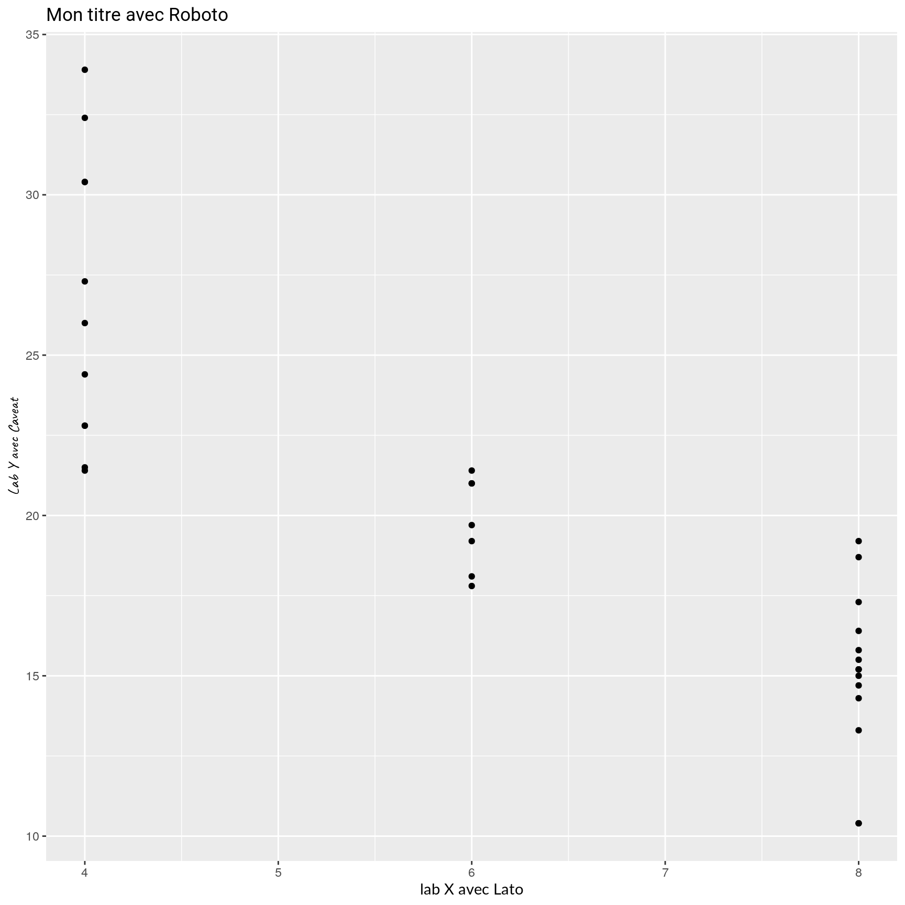

ggplot2 themes
ab-ggplot2-themes.RmdThème ggplot
Ce thème peut être défini globalement pour un Rmd ou une application Shiny avec theme_set(theme_dreal()). Cependant, créer des zones de couleurs différentes pour le titre ou la caption n’est pas possible de cette manière.
# directly in a plot
ggplot(mtcars) +
aes(hp, mpg, colour = as.character(gear)) +
geom_point(size = 4, alpha = .8) +
scale_color_dreal_d() +
ggtitle("Simple graph") +
labs(caption = "Source: DREAL") +
theme_dreal()
# facet plot
ggplot(mtcars) +
aes(hp, mpg, colour = as.character(gear)) +
geom_point(size = 4, alpha = .8) +
scale_color_dreal_d() +
facet_wrap(vars(carb)) +
ggtitle("Facets graph") +
labs(caption = "Source: DREAL") +
theme_dreal()
Thème avec un format multiplot
C’est le format le plus proche de la proposition graphique. Cependant, il ne fonctionne pas comme un theme classique. Il nécessite d’ajouter une fonction drealize à chaque graphique à la place de l’écriture du titre.
# directly in a plot
g <- ggplot(mtcars, aes(hp, mpg, colour = as.character(gear))) +
geom_point(size = 4, alpha = .8) +
scale_color_dreal_d()
g2 <- drealize(g,
title = "Plot created with drealize()",
caption = "Source: DREAL",
legend.position = "bottom")
# ggsave(g2, filename = "g2.png")
# facet plot
# facet plot
g3 <- ggplot(mtcars) +
aes(hp, mpg, colour = as.character(gear)) +
geom_point(size = 4, alpha = .8) +
scale_color_dreal_d() +
facet_wrap(vars(carb))
drealize(g3,
title = "Facet plot created with drealize()",
caption = "Source: DREAL",
legend.position = "bottom")
Les graphiques avec légende à droite peuvent nécessiter de définir des tailles de sorties des graphs dans un Rmd pour ajuster les ratios
# Plot with legend on the right
# directly in a plot
g <- ggplot(mtcars, aes(hp, mpg, colour = as.character(gear))) +
geom_point(size = 4, alpha = .8) +
scale_color_dreal_d()
drealize(g,
title = "Plot created with drealize()",
caption = "Source: DREAL",
legend.position = "right")